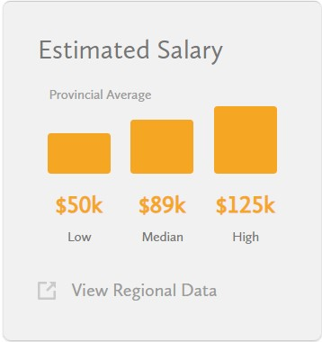
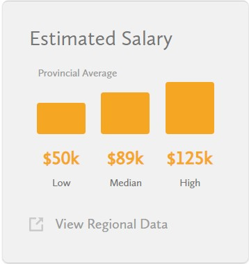

My dream job is computer science.
Computer scientists write code to create software programs.
This involves in
initially planning the software,
creating models and flowcharts detailing how the
code is to be written, writing
and debugging code,
and designing an application or system interface.
Computer science often promotes an exciting,
cooperative, and challenging work environment.
There are many places
where computer scientists
can be found, such as tech companies, research
facilities, governmental organizations, and
academic
institutions. They frequently perform either alone or
collaborative work in offices. Computer science jobs
frequently require problem-solving, critical thinking,
and ongoing learning. Collaborating with coworkers,
taking part
in brainstorming
sessions, and working in cross-functional teams are typical
activities for computer scientists.
| Provinces | Range |
|---|---|
| Ontario | $50,440 - $124,800 |
| Alberta | $46,010 - $134,992 |
| British Columbia | $52,000 - $130,000 |
| Manitoba | $49,067 - $109,990 |
| New Brunswick | $46,010 - $119,995 |
Usually, courses needed to be taken in high school